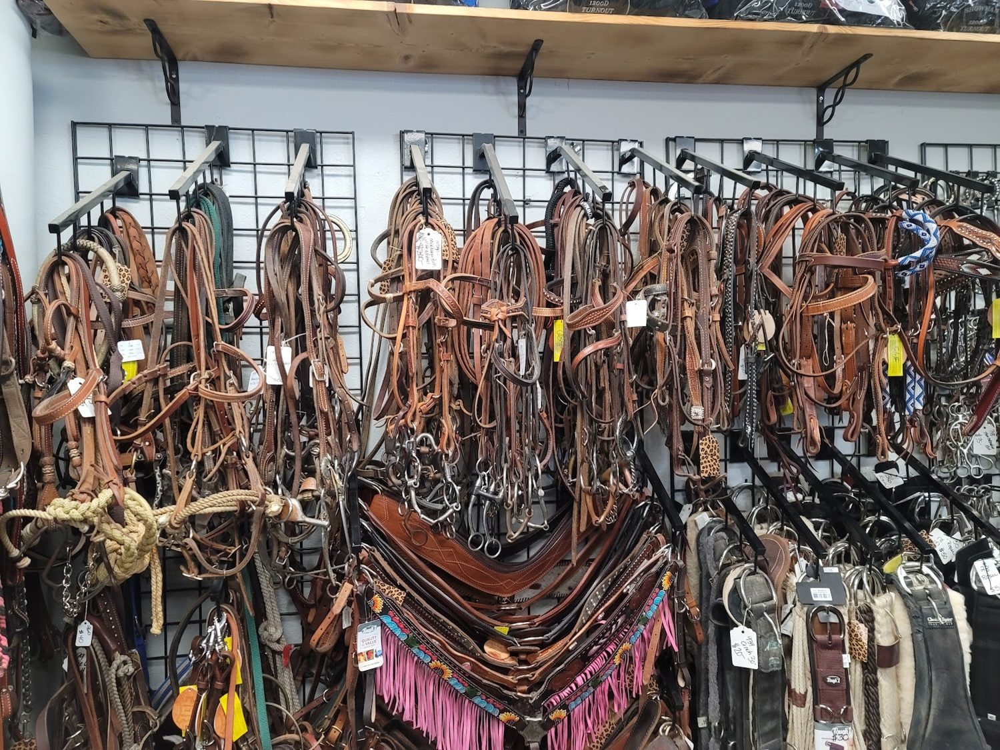

How to know a saddle actually fits your horse
A plain English guide from the floor of our shop in Caldwell. No jargon, no upsell, just what we tell folks every week.

A saddle is the one piece of gear that touches your horse the most and forgives the least. Get it right and your horse moves freely and stays happy to work. Get it wrong and you can end up with sore backs, bad attitudes, and a horse that flinches when the saddle comes off the rack. The good news is that checking fit is not a mystery. Here is exactly what we look at when someone brings a horse and a question into the shop.
Why fit matters more than the price tag
We have watched plenty of riders spend big on a beautiful saddle that simply did not fit their horse, and watched others find a perfect match in our used section for a fraction of the cost. Fit beats brand and fit beats budget. A saddle that does not fit puts pressure where it does not belong, and your horse cannot tell you in words. It tells you instead by pinning its ears when you tack up, hollowing its back, refusing to move out, or developing dry spots and white hairs over time. Those are not training problems. They are fit problems wearing a disguise.
Start at the withers
The first thing we check is wither clearance. Set the saddle on the horse without a pad, in the natural pocket just behind the shoulder blade, and look for room over the withers. With a rider in the seat you still want two to three fingers of clearance. If the saddle settles right down onto the withers, it is too wide or the tree is wrong for that back, and no amount of padding will truly fix it. Stacking up pads to lift a saddle is like wearing thick socks to fix shoes that are too big. It changes the feel, not the fit.
Read the tree and the bars
Underneath every saddle is the tree, and the bars of that tree are what actually carry the load. You want those bars to lie flat and even against the horse's back so the pressure spreads out smoothly. Slide your hand under the saddle from front to back and feel for even contact. If it bridges, meaning it touches at the front and the back but gaps in the middle, the pressure concentrates on just two spots. If it rocks like a see saw when you press on it, the tree is too curved for that horse. A flat, even, quiet contact along the whole bar is what you are after.
Do not forget the rider
Saddle fit is a two way street. A saddle can sit beautifully on your horse and still be wrong for you. If the seat leaves you perched on the cantle or cramped against the swells, you will fight your own balance every ride, and your horse feels every bit of that. Sit in it. You want your seat bones supported, a hand's width of room in front of you, and stirrups that hang where your leg naturally falls. The right saddle disappears under you. The wrong one reminds you it is there the whole ride.
New or used? Both can be the right answer
People often ask whether they should buy new or used, and our honest answer is that it depends on the horse and the wallet, not on pride. A brand new saddle is wonderful, but a quality used saddle that fits is far better than a new one that does not. Our used section is the secret weapon for first horses and growing kids, and it is a treasure hunt for experienced riders who know value when they see it. The stock rotates often, so it pays to check back. And if you have a saddle you have outgrown, we regularly take quality gear in, so it can find a new rider instead of gathering dust.
The part most guides leave out
Here is the truth that no checklist can replace. You can measure withers, read trees, and study fit charts all day, and you still will not truly know until that saddle is on your horse, with your weight in it, moving down the rail. That is why, on most saddles bought in store, we let you take it home the same day and try it, with a twenty four hour no risk return if the fit is wrong. It takes the gamble out of the biggest purchase in your tack room. Try it, watch how your horse moves, check for even sweat marks after a ride, and bring it back if it is not right. No pressure, no hard sell.
When to just ask
If all of this feels like a lot, that is exactly what we are here for. Owner Melissa and the crew ride, and they have fit more saddles than they can count. Tell us your horse, your discipline, and your budget, and we will narrow the wall down to the saddles that actually make sense for you. Folks call our shop a hidden treasure and a perfect example of old Idaho hospitality, and the honest, patient help is a big part of why. We would rather send you home with the right used saddle than talk you into the wrong new one.
What your horse's back tells you after a ride
One of the simplest fit checks happens after you untack. Pull the saddle and pad and look at the sweat pattern on your horse's back. You want an even, mirror image of dampness on both sides, running smoothly along where the bars sat. Dry spots in the middle of an otherwise sweaty area are a warning sign, because they usually mean the saddle is pressing so hard in that spot that it is choking off circulation and the sweat glands cannot work. Uneven sweat from side to side can point to a crooked tree or a rider who sits to one side. Run your hand firmly along the back muscles too, and watch for flinching, heat, or tender spots. Your horse is giving you a fit report after every single ride if you know how to read it.
A quick word on pads
We sell plenty of good saddle pads, and a quality pad absolutely has its place. It cushions, it wicks sweat, and it protects the saddle. What a pad cannot do is turn a saddle that does not fit into one that does. If a saddle is too wide, a thicker pad just perches it higher and can actually make pressure points worse. If it is too narrow, no pad on earth will give the spine the room it needs. Think of the pad as the finishing touch on a saddle that already fits, not as a repair kit. When someone comes in convinced they need a thicker pad, the first thing we do is look at the saddle, because nine times out of ten the pad is not the real problem.
The short version
- Check for two to three fingers of wither clearance with a rider up.
- Make sure the tree bars sit flat and even, with no bridging or rocking.
- Confirm the seat fits you, not just the horse.
- Do not rule out used. A used saddle that fits beats a new one that does not.
- Try before you commit, and watch your horse for the real answer.
That is the whole game. If you are anywhere in the Treasure Valley and you are saddle shopping, come see us on Cleveland Boulevard in Caldwell. Bring your questions, say hello to the shop dogs, and let us help you find the one that fits.